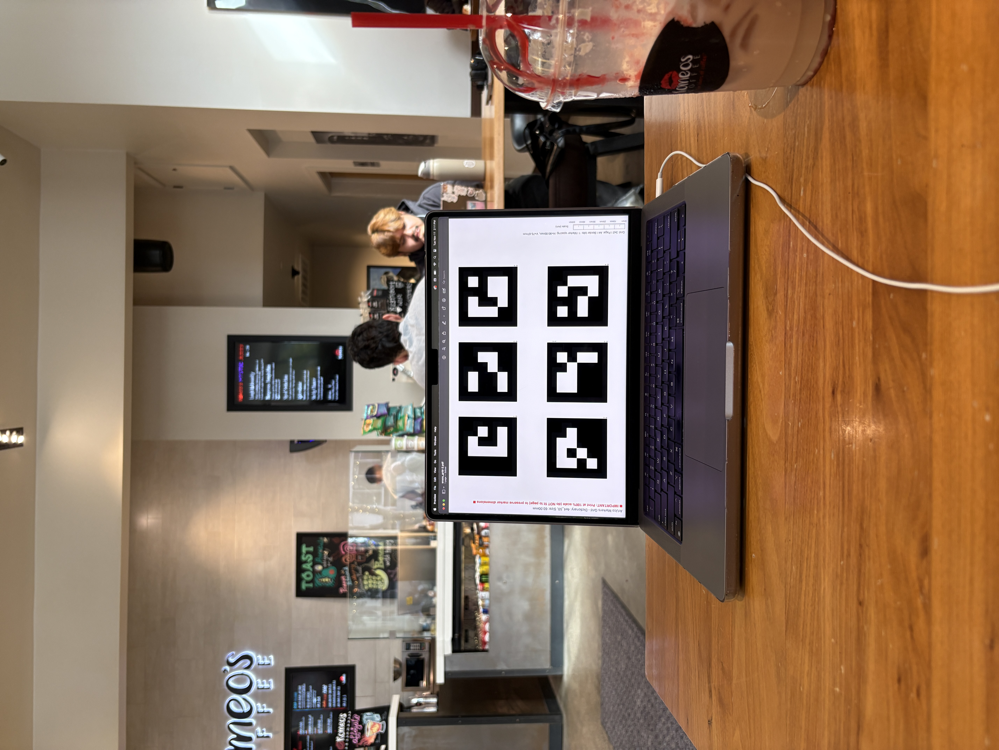
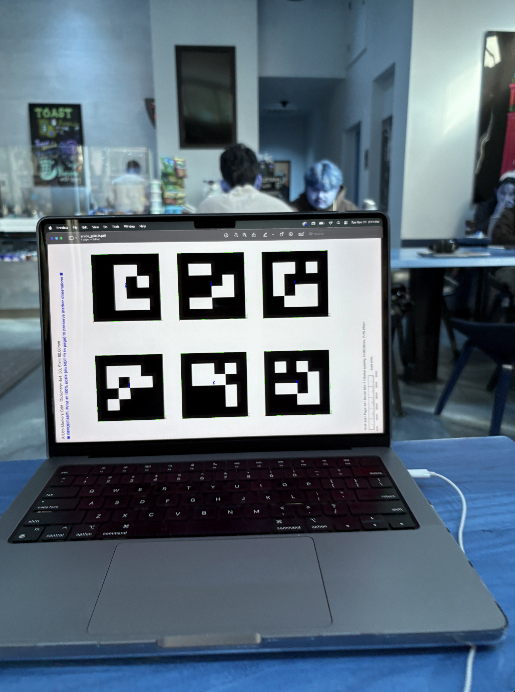
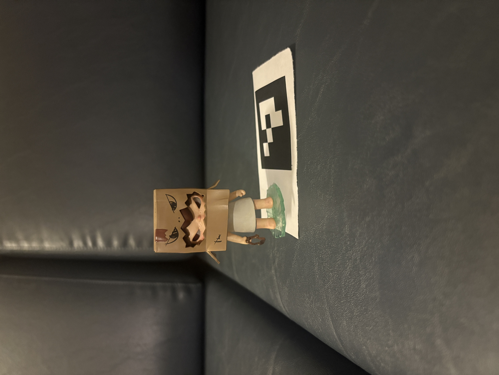
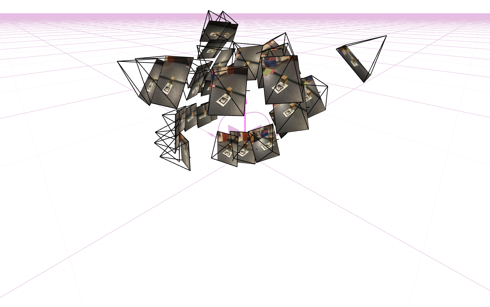
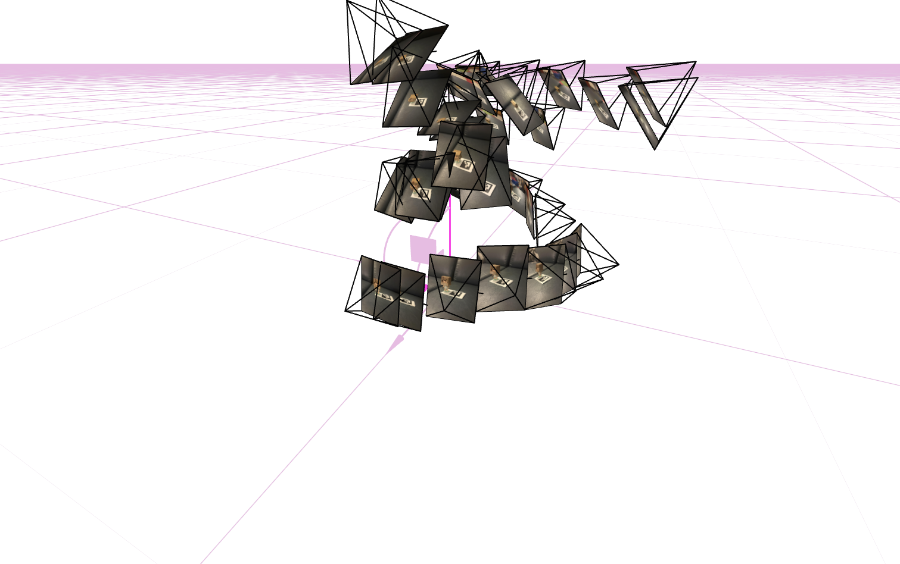
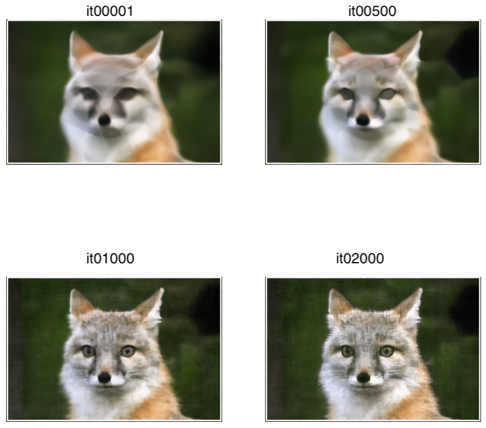
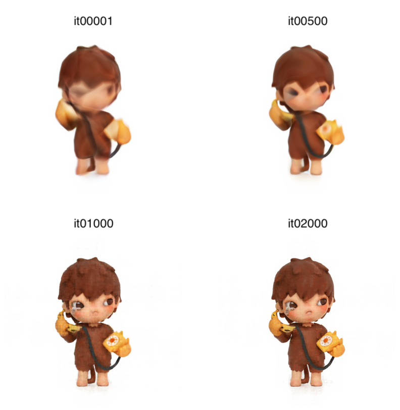
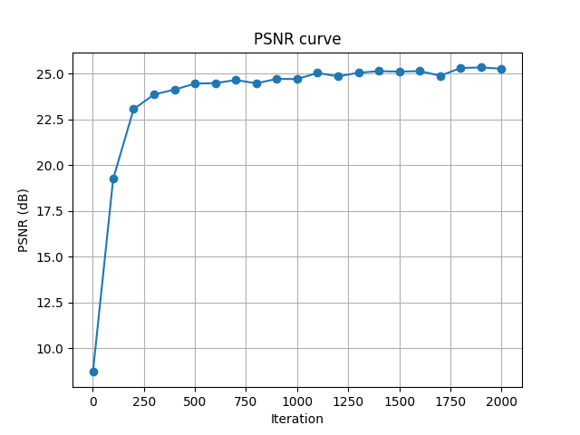

cameras, rays, and samples in 3D

one camera rays
In this project, I implemented Neural Radiance Fields (NeRF) to showcase 3D scenes from multi-view images. The project started with camera calibration using ArUco markers, then fitting a neural field to 2D images, and finally training a full 3D NeRF model.
I first calibrated my phone camera using ArUco markers. I took 40 images of the aruco calibration markers from different angles and distances. Using OpenCV's ArUco detector and cv2.calibrateCamera(), I computed the camera intrinsic matrix and distortion coefficients. I also made sure to handle the cases where tags weren't detected. I did this by checking if the detection returned any aruco ids before processing.

Calibration Image (without tags)

Calibration Image (with tags) (zoom in!)
For the 3D scan, I used a hirono figure and placed it next to a printed ArUco marker. I took 49 photos from various angles while trying to maintain consistent lighting and distance, and avoiding motion blur.

hirono !
Using cv2.solvePnP(), I estimated the camera pose for each image. The function itself takes in the 3D coordinates of the ArUco tag corners (object coordinates) and their corresponding 2D pixel locations (image coordinates) to compute the rotation and translation vectors. I converted these to camera-to-world transformation matrices for visualization.

Viser visualization showing all cameras

Alternative view
After undistorting the images with cv2.undistort(), I packaged everything into an .npz file. I split the data into training (~70%), validation (~15%), and test (~15%) sets. The dataset includes undistorted images, camera-to-world matrices, and the focal length.
I implemented an MLP with the following architecture:
Positional Encoding: I used the formula from the NeRF paper where PE(p) = [sin(2⁰πp), cos(2⁰πp), sin(2¹πp), cos(2¹πp), ..., sin(2^(L-1)πp), cos(2^(L-1)πp)], concatenated with the original input.
The network learns to represent the image by mapping coordinates to colors. Initially, the output is quite blurry, but as training progresses, fine details emerge. The positional encoding is crucial for capturing high-frequency details.



I implemented three coordinate transformations:
Ray Sampling: I implemented a dataloader that randomly samples 10,000 rays from the training images.
Point Sampling: Along each of the rays, I uniformly sampled 64 points between near=2.0 and far=6.0. During training, I add random perturbations to these sample locations to prevent overfitting.
cameras, rays, and samples in 3D
one camera rays